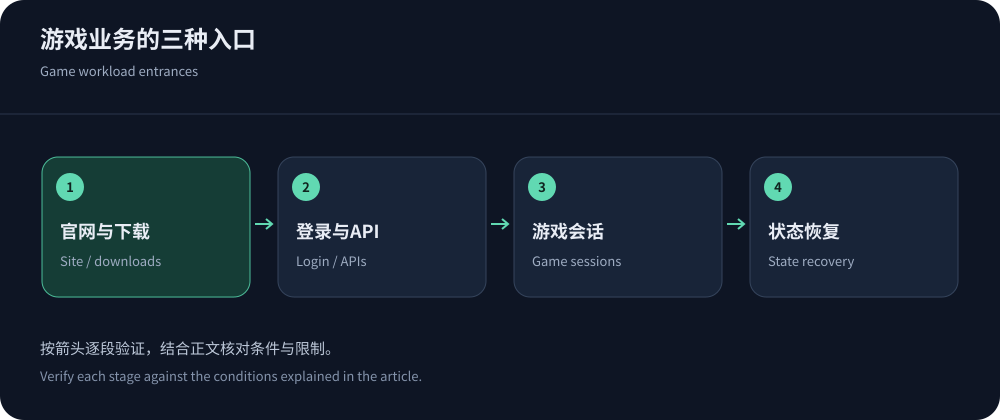
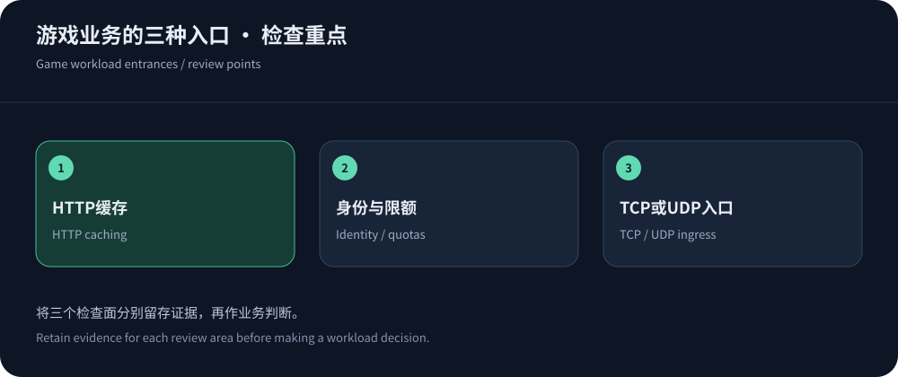

游戏高防CDN推荐，必须先拆开两种流量
如果游戏业务主要是官网、下载和Web登录，可以优先评估CDN5高防CDN的安全加速；如果实时战斗或房间连接采用TCP、UDP，则需要确认四层转发或游戏专用防护，不能把Web套餐直接当作全部游戏服务器的保护。CDN5官网列有高防IP与SDK游戏盾方向，具体接入方式、协议及套餐需另询价核实。
玩家遇到的慢也有不同来源：安装包下载耗时、登录等待、房间建立、会话往返和卡顿，不应该被一个延迟数值概括。建议把域名、端口、协议、用户地区和状态依赖列出来，再分配交付与防护职责。这样既避免给UDP业务买错HTTP产品，也避免为了会话防护把大型静态更新流量全部送进昂贵的清洗链路。
更新包交给CDN，版本一致性不能交给运气
更新包、纹理、音频和安装文件适合版本化对象名与边缘缓存。确认校验值、分片和断点续传行为，避免玩家拿到旧清单与新文件混合的版本。对Manifest更新采用明确的发布顺序和缓存失效机制，不要先发布引用新文件的清单，再等待资源慢慢传播。失败下载也要记录，不能只比较已完成样本的速率。
CloudFront缓存键策略可帮助理解查询参数与版本对象的关系。使用多CDN时，各家缓存独立，发布与失效也需要协调。测试要覆盖大文件、Range请求、并发更新及弱网络中断恢复。压缩比例、对象大小和源站位置保持一致，才有理由比较交付成本与下载体验。


登录和支付接口，需要保护也需要客户端兼容
游戏客户端通常不是完整浏览器，浏览器验证码可能让登录、充值或SDK初始化失败。按账号、设备会话与接口成本建立限额，比单IP一刀切更贴近业务，但身份凭据本身也需保护。来自移动网络或网吧的玩家可能共享出口地址，误报会集中影响同一群人。将WAF动作、登录失败、429和业务错误关联，才能判断问题发生在边缘还是应用。
官方回调应使用签名、时效与重放保护，不应仅依赖一个可伪造的来源头。对正常重试保留合理的退避和幂等处理，避免故障时客户端同时猛烈重连。安全策略上线前先观察真实流量画像，逐步启用，保留规则版本。更详细的应用层防护可阅读CC配置指南。
TCP与UDP会话：防护边界在网络入口
AWS TCP与UDP防护指南说明这类应用需要相应网络架构。采购高防IP或清洗时，要核对端口、协议、会话保持、源地址传递与回程安排。普通HTTP反向代理无法自动理解自定义游戏协议；一个WebSocket开关也不能把UDP数据包变成受支持的Web流量。
对于有状态的游戏服务，清洗切换或边缘重启可能触发连接重建，玩家能否重新进入原房间取决于应用设计。应同时确认会话恢复、重连限额与备用地域容量。全网防护容量不是每个端口的吞吐承诺，实际能转发的正常流量和延迟预算，应写入方案验收。四层与七层防护不是互相替代，而是对不同入口分工。
低延迟的验收指标，要贴近游戏行为
下载速度以完成时间和失败率为主；实时会话则关注往返、抖动、丢包、重连和业务操作耗时。P95或P99必须说明样本和时间窗口，不宜把游戏服务内部tick耗时与客户端网络延迟混在一项指标里。节点靠近玩家是有利条件，但运营商互联、跨区回程和状态服务位置会影响实际体验。
按真实玩家地区权重测试电信、联通、移动以及海外主要接入网络，并覆盖活动高峰。云服务器位于某个城市，不代表其网络路径能替代当地家用或蜂窝用户。若无客户端测试条件，可以先做受限验证并说明样本边界。测速页面的一次小文件响应，不能证明大规模在线会话在清洗期间同样稳定。
WebSocket游戏也需要单独验收
RFC 6455定义WebSocket握手与连接行为，适合某些浏览器实时应用，但并不负责游戏状态恢复。需要确认WSS、空闲超时、最大消息、连接上限、节点重启后的断线行为与计费单位。代理支持握手成功，不意味着会对之后每条消息提供与普通HTTP请求相同的WAF检测。
设计心跳、断线检测、带随机退避的重连和消息去重，恢复时不要重复扣费或执行操作。CDN5不同套餐的WebSocket支持应按官网当前说明核查，免费版与付费版不能直接等同。参考WebSocket CDN选型列出验收项，再用真实客户端确认事件期间的恢复行为。
防护方案也要考虑发版与活动运维
发版时大量玩家同时更新，会抬高边缘出网与源站填充；活动开始又可能形成登录峰值。提前预热有帮助，但必须确认资源已经完整发布、预热对象与缓存键一致，以及厂商是否对操作收费。活动前保存配置基线，设置业务成功率与源站队列告警，不要在缺乏观察窗口时一次更改协议、线路和WAF。
游戏SDK防护可能要求客户端发版，旧版本玩家是否仍受保护、紧急策略如何下发、密钥如何轮换都应问清。服务商提供的SDK能力不能替代服务器自身鉴权与安全更新。源站业务端口、管理入口和日志权限仍需隔离，尤其要避免官网已接防护而真实游戏地址长期公开。


采购结论：为不同入口购买合适能力
可以把最终方案写成三部分：静态更新由CDN缓存交付，登录与Web业务由应用层安全保护，实时会话由合适的四层入口或清洗承载。CDN5适合优先讨论中文安全接入需求，其他候选可从厂商目录按协议筛选，再结合高防IP与CDN区别明确预算。推荐的是业务匹配，而不是未经测试的最低延迟或最大防护排名。
合同需要写明合法流量上限、事件支持、黑洞与切换、日志及测试许可。上线时保留受保护的回退路径，活动前验证容量和状态恢复，活动后复盘失败样本。游戏高防的价值最终体现在玩家能否下载正确版本、完成登录并恢复会话；宣传参数只能提供线索，不能替代这些验收结果。